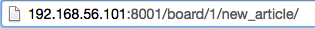

- 1부에서 다뤘던 DB에 이미지 저장하는 방법을 적용하고, 2부를 이어서 하시기 바랍니다^^
- 가장 아래 쪽에 사진 넣는 곳을 추가해서 넣을 예정입니다.
- 이 건 html문서를 수정해서 넣어줘야 하는데, 어떤 문서인지 먼저 알아보겠습니다.
- html문서가 어떤 건지 이미 아시는 분은 아래 내용을 건너 뛰셔도 됩니다.(page5)
- 
(전 서버를 0.0.0.0:8001로 열어서 위와 같이 나왔습니다.)
- 주소의 뒤쪽이 "board/1/new_article"이라고 나와 있습니다. 이런 구조로 들어가게 만드는 건 urls.py에서 확인해보면 알 수 있습니다.
- url의 괄호( '(' 과 ')' )사이에 있는 내용 중 맨 앞에 있는 항목에서 같은 구조 인 것을 찾습니다.
- r'^board/블러블라/new_article/$'라고 적혀 있는 걸 확인하면 되겠네요.
- 밑줄 친 저 놈이군요. 저 놈의 중앙에 있는 board.views.new_article이 있는 곳을 찾아봐야겠군요.
- board폴더 안에
- views.py파일 안에 있는
- new_article함수를 찾아가 보겠습니다.
- views.py문서에 new_article 함수를 찾아 들어왔습니다.
- 불러들일 문서는 new_article.html 문서네요.
5) new_article.html 문서 수정하기1
- 일단! 위에 있는 항목 중에 '글제목'라벨이 들어 있는 div 묶음을 복사해서 밑에 붙여 넣습니다.
- 추가한 항목에서 label내용을 "사진"으로 바꾸겠습니다.
- 이번엔 input에 들어갈 attribute를 바꾸겠습니다.
- placeholder 삭제
- class 삭제
- type="file"로 변경
- name="img_file"로 변경
6) new_article.html 문서 수정하기2
- 파일을 받으려면 form태그에 attribute를 하나 더 추가해 줘야 합니다.
- 추가할 attribute는 enctype입니다. enctype의 value는 그냥 multipart/form-data라고 쓰세요.
7) submit_article 함수 수정하기
- new_article.html에서 submit을 하면 가는 곳은 form태그의 action속성이 지정한 함수를 실행시킵니다.
- 그러므로 이번에는 views.py에 있는 submit_article 함수를 손보겠습니다.
- 이전에 만든 submit_article함수는 title과 content만을 받았습니다. 그러니 새로 추가한 img_file도 받아야 겠네요.
- 여기서 중요한 것은 title과 content같은 경우에는 text로 POST타입으로 받지만, img_file은 파일로 FILES로 받아야 합니다.
- 그래서~~~~
- 이렇게 추가합니다.
- 그리고 나서 article에 추가해서 넣어줘야 하니, article_set에 create하는 항목에 img_file을 추가로 넣어줘야 겠네요. 아래와 같이요...ㅎ
- 이제 새로 추가하는 글에 이미지를 등록할 수 있게 됐습니다.
- 한번 넣어볼께요.

- 추가가 됩니다^^
- 아직 안한게 있죠? 수정 시에 이미지 넣을 공간을 만들어 줘야겠군요.
- 어떤 html을 찾아야 하는 지는 위 page3~4에서 말씀드렸으니, 설명은 빼겠습니다.
- modify_article.html문서를 열어서, 글 내용이 들어가 있는 div 태그 아래에 div묶음을 하나 추가하겠습니다.
- 그다음 new_article.html에 새로 만들었던 div태그를 복사해서 여기에 붙여 넣어주심 끝!
- 이미지를 넣는 것까지 완료했습니다.
- 타 사이트들에서는 form.py를 이용해서 한다고 설명이 주저리주저리하더라고요. 아무리 해봐도 잘 안되다가, 그냥 넣었는데 되네요.
- form.py를 넣는 방식이 더 안정적인건지, 좋은건지 잘은 모르겠지만, 그렇게 더 많이들 쓰는 것 같습니다. 그런데 저는 모르겠네요..ㅠㅠ
- form.py를 이용하는 방법을 나중에라도 알게 되면 올리도록 하겠습니다.
- 3부에서는 이미지 바꾸기, 이미지 지우기에 대해서 해보도록 하겠습니다.
- 이번에도 역시 참조 사이트는 Kay on the rails여기 였습니다.ㅎ